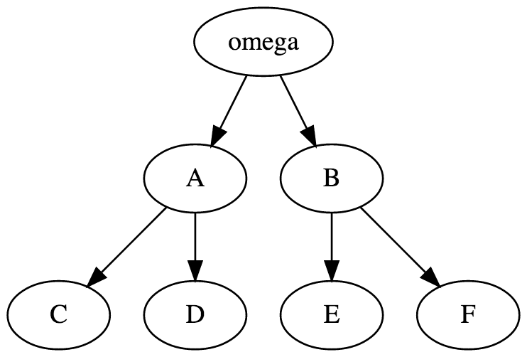
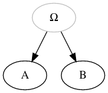
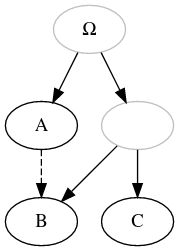

Our idea is to create an open source collection of historical text genealogies, in forms of tree-like graphs (also called stemma), for any language.
N.B.: only directed stemmata are considered, and undirected graphs are left out of the scope of our database (at least for now).
Trees are encoded with the DOT graph description language: the image on the right is created out of the code on the left.

digraph {
omega ->A;
omega ->B;
A -> C;
A -> D;
B -> E;
B -> F;
}
Working with images generated out of the code allows us, on the long term, to query the code and conduct quantitative research on textual traditions.
You want to contribute? It is easy. To do so you need:
An example folder is available online. You can also have a look at the actual data, which are organised according to linguistic traditions (we follow the tist of ISO 639-3 codes: fro for medieval French, gmh for medieval German…).
Each record is contained in a dedicated folder, named with the structure: scholar_year_text (see examples). It is made of up to three files (with the exact same name than those given infra).
metadata.txt is metadata file about the stemma (author of the text, writing date, name of the
philologist who made the stemma, scientific publication in which the stemma was found…). You can find an
example here.stemma.gv is DOT format file (extension .gv) for the stemma. You can find an example
here.stemma.png is an image scan (in black and white, as a png file) found in the source (article, edition…). You can find an
example here.This is an important step! You need to explain what are your sources (traceability) and who you are (to receive credit for your work!). You need to prepare four types of metadata.
An online form is
available to help you create the metadata.txt file you need to attach to your stemma.
Dates should be encoded as:
Places should be indicated with their modern names preferably with an indication of the superior regional unit when relevant, especially for city, e.g., Thionville (Moselle, France).
Regions especially cultural/linguistic or traditional regions can still be indicated when relevant, e.g. Lorraine or Burgundy.
Question marks can be used to mark uncertainty (e.g., 1252?; Burgundy?)
Finally, for normalisation purposes, English names should be used when they exist.
To encode the graph, we use the DOT graph description language. and write it in a file with the extension .gv.
To make it easier, you can find a free editor, Edotor, at this adress.
Here are a few rules one need to follow:
| Simple graph |
|
|
| Greek letter |
|
|
| Hypothetical node (e.g., archetype, subarchetype…) in grey |
|
 |
| Unnamed (hypothetical) node |
|
|
| Contamination |
|
 |
| Unidrected contamination |
|
 |
| Uncertainty (usually expressed with ? or --- dashed lines by editors, not to be confused with contamination) |
|
When encoding the stemma, you should always favor spirit (i.e., semantism) over letter (i.e. formatting).
| (Ewert, 1932, Gui de Warewic) |
Extra-archetypal (or extra-stemmatic) contamination is the case where a witness is contaminated by a source outside of the descendants of the archetype. Some editors indicate it with an arrow coming from the outside, while other simply indicate it in the text. |
In both cases, it is encoded by added the necesseray missing node to turn the representation into the standard directed graph, with a single root. That means: 1. adding an unnamed root, 2. adding the missing hypothetical node, outside of the archetypal tradition, that is the source of the contamination, 3. signaling the contamination from this outside missing node to the contaminated witness.
| Extra-archetypal contamination |
|
If you can't make a pull request, drop us the files with a few words by opening an issue and appending the files!
But please, if you can do a pull request, we prefer it this way!
We have decided to use Github to work collaboratively. To avoid major problems while sharing data, we recommend to share your work using a pull request. Here's how.
YOUR_PSEUDO has to be replaced by your GitHub username). In the terminal, write:
git clone git@github.com:YOUR_PSEUDO/database.git
git remote add --track master upstream git@github.com:OpenStemmata/database.git
git fetch upstream
metadata.txt,
stemma.dot, and (optional) stemma.png) in the Data folder. Create a branch
git checkout -b BRANCH_NAME
git add PATH/TO/metadata.txt PATH/TO/stemma.dot PATH/TO/stemma.png
git commit -m "NAME_OF_THE_TEXT"
git push -u origin BRANCH_NAME
BRANCH_NAME) and clicking on "compare and pull request".
BRANCH_NAME).